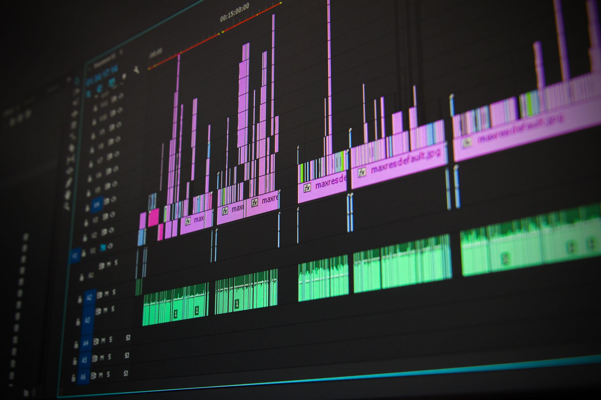

Grado en Comunicación Audiovisual
Universidad de Alcalá
2023 - 2027
He cursado los cuatro años de carrera complementándolo con formación artística de teatro, canto y baile.
Estudiante de Comunicación Audiovisual
Soy Inés, creadora de contenido apasionada por la creatividad, la comunicación y el poder de las ideas. A través de mi trabajo, busco crear contenido original, cuidado y con personalidad, combinando diferentes formatos y recursos para transmitir mensajes que conecten con las personas. En esta página podrás conocer más sobre mis proyectos, descubrir mi proceso creativo y explorar algunos de los trabajos que he desarrollado. Cada contenido representa una oportunidad para experimentar, aprender y transformar una idea en algo único. Mi objetivo es crear propuestas que no solo sean visualmente atractivas, sino que también comuniquen, inspiren y generen una conexión auténtica con la audiencia. Gracias por visitar mi espacio y formar parte de este recorrido creativo.
Ver mis proyectos
Me considero una persona creativa, animada, curiosa y muy friki. Me encanta explorar nuevos mundos, descubrir tendencias y encontrar formas originales de expresarme a través del contenido digital. Actualmente comparto parte de mi creatividad en TikTok, donde creo contenido dinámico y cercano, combinando entretenimiento, personalidad y diferentes recursos audiovisuales.
Mi formación artística también ocupa un lugar muy importante en mi trayectoria. He recibido formación en teatro, canto y danza, disciplinas que me han ayudado a desarrollar habilidades como la expresión corporal, la interpretación, la comunicación y el trabajo frente a cámara. Todas ellas forman parte de mi manera de crear y me permiten desenvolverme en distintos formatos y dar vida a diferentes personajes, ideas e historias.
Universidad de Alcalá
2023 - 2027
He cursado los cuatro años de carrera complementándolo con formación artística de teatro, canto y baile.
Completé los dos años de bachillerato en el IES Liceo Caracense.
2020-2022
El rincón Lento
2023
En el Maratón de cuentos de Guadalajara estuve a cargo del puesto de libros del Rincón Lento durante el evento.
Ecoaventura
2024
Hace dos años participé en las cabalgatas festivas de mi ciudad como animadora durante el desfile.
Consulta algunos de los proyectos y experiencias desarrollados durante mi formación.
| Año | Proyecto | Rol | Herramientas |
|---|---|---|---|
| 2025 | Vídeo de YouTube | Postproducción | CapCut Pro |
| 2026 | Cortometraje CineAlcarria "El Baile" | Postproducción | DaVinci Resolve |
| 2026 | Exposicion Brotes | Fotografía | Photoshop |
| 2022-2026 | Creadora de contenido | Edición de vídeo | CapCut Pro |

Cortometraje universitario "El baile"
Año: 2026
Este fue cortometraje para el que trabajé, fue estrenado hace poco en cines de Guadalajara por el festival Cine Alcarria. Pasé cuatro meses trabajando en el proyecto con el resto del equipo de postproducción.
Ver proyecto
Exposición fotográfica "Brotes"
Año: 2026
Participé como fotógrafa en la exposición universitaria BROTES, cuyas obras se expusieron en el colegio caracciolos de Alcalá de Henares. Realicé una sesión de fotos entorno a una temática y finalmente seleccioné la mas idónea tras su edición.
Ver proyecto
Creción de contenido de videojuegos
Año: 2022-2026
Llevo cuatro años colaborando con la empresa de videojuegos "HoYoverse" como creadora de contenido en TikTok e Instagram. Suelo subir un vídeo diario. Amplia experiencia en la presencia y funcionamiento de las redes.
Ver proyectoEmail: inesuka.mega@gmail.com
Instagram: @nesudubs
LinkedIn: Mi perfil